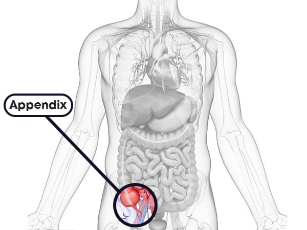

What is Appendicitis ?
Appendix • Apr 4, 2024
Appendicitis is a medical condition characterized by inflammation of the appendix, a small, finger-shaped pouch located at the junction of the small intestine and the large intestine in the lower right abdomen. Appendicitis is considered a medical emergency and typically requires prompt surgical intervention to prevent complications such as a burst appendix (perforation) and potentially life-threatening infections.
Difference of Acute and Chronic Appendicitis?
Acute appendicitis is the most common form of appendicitis and refers to a sudden and severe inflammation of the appendix. It typically develops rapidly over a short period, often within 24 to 48 hours.
Chronic appendicitis is a less common and less well-defined form of appendicitis characterized by recurrent or persistent symptoms of milder intensity over a longer period. It is often referred to as a "smoldering" or "grumbling" inflammation of the appendix.
What cause Appendicitis?
Appendicitis occurs when the appendix becomes inflamed, usually due to an obstruction in the appendix. The exact cause of this obstruction is not always clear, but it can result from various factors:
- Obstruction: The most common cause of appendicitis is a blockage in the opening of the appendix, usually by fecal matter, a foreign body, or swollen lymphoid tissue. Once the appendix is obstructed, bacteria can multiply within it, leading to infection and inflammation.
- Infection: In some cases, appendicitis may be triggered by an infection, often bacterial, that spreads to the appendix. This infection can cause swelling and inflammation of the appendix.
- Enlarged Lymphoid Follicles: Lymphoid tissue in the appendix can become enlarged and obstruct the appendix, leading to inflammation. This is more common in children and adolescents.
- Trauma: Trauma or injury to the abdomen can sometimes lead to appendicitis, although this is less common than obstruction or infection.
- Tumors: Rarely, tumors, either benign or malignant, can block the appendix and cause appendicitis.
- Genetic Factors: Some studies suggest that there may be a genetic component to appendicitis, with certain individuals having a higher risk based on their family history.
Symptoms of Appendicitis:
Appendicitis typically presents with a combination of symptoms, and the severity and combination of symptoms can vary from person to person. Here are ten common symptoms associated with appendicitis:
- Abdominal Pain: The most prominent symptom of appendicitis is abdominal pain, often starting around the belly button and then moving to the lower right side of the abdomen. The pain may worsen over time and become sharp and severe.
- Nausea: Nausea is a common symptom of appendicitis and may accompany abdominal pain. Some individuals may experience vomiting as well.
- Loss of Appetite: Appendicitis can cause a decrease in appetite due to abdominal discomfort and nausea.
- Fever: Appendicitis may lead to a low-grade fever or an elevated body temperature, particularly if there is an associated infection.
- Abdominal Tenderness: Palpation of the abdomen, especially in the lower right quadrant (McBurney's point), may reveal tenderness or discomfort.
- Guarding or Rigidity: In advanced cases of appendicitis, the abdominal muscles may become tense or rigid, a condition known as guarding, in response to pressure or movement.
- Rebound Tenderness: Rebound tenderness occurs when pressure applied to the abdomen is released and causes increased pain. It is often a sign of peritoneal irritation and can be indicative of appendicitis.
- Changes in Bowel Habits: Some individuals with appendicitis may experience changes in bowel habits, such as diarrhea or constipation. However, these changes are less common than other symptoms.
- Malaise: Generalized feelings of discomfort, fatigue, or malaise may accompany appendicitis, especially if it progresses to a more severe state.
It's important to note that chronic appendicitis is a controversial diagnosis, and some medical professionals debate its existence as a distinct clinical entity. Some argue that the term may be used to describe other conditions with similar symptoms rather than a true chronic inflammation of the appendix. As with any medical condition, a thorough evaluation by a healthcare professional is necessary to determine the appropriate diagnosis and treatment plan.
Diagnosis and Tests
How is appendicitis diagnosed?
A healthcare provider will ask you detailed questions about your pain and other symptoms. They’ll perform a gentle physical exam to check for physical signs of appendicitis, such as guarding, stiffening and pain in response to pressure. If you have the typical profile of symptoms, they may be able to diagnose you right away. If you don’t, they may need to order further tests to confirm appendicitis.
What tests can diagnose appendicitis?
Appendicitis tests typically include blood tests and imaging tests. Blood tests can show signs of inflammation, such as a high white blood cell count or C-reactive protein count, and they can help identify an infection. Imaging tests, such as an abdominal ultrasound or a CT scan, can show if your appendix is swollen. A healthcare provider may order additional tests to rule out other conditions.
Treatment of Appendicitis
The treatment of appendicitis typically involves surgical removal of the inflamed appendix, a procedure known as an appendectomy. Here's an overview of the treatment process:
-
Confirmation of Diagnosis:
- The diagnosis of appendicitis is usually made based on a combination of clinical evaluation, physical examination, laboratory tests, and imaging studies (such as ultrasound or CT scan).
- The healthcare provider will assess the patient's symptoms, perform a physical examination to check for signs of appendicitis (such as abdominal tenderness and rebound tenderness), and order diagnostic tests to confirm the diagnosis.
-
Preoperative Preparation:
- Before surgery, the patient may receive intravenous fluids and antibiotics to help manage symptoms and prevent infection.
- It's essential for patients to follow preoperative instructions provided by their healthcare provider, such as fasting before surgery and abstaining from certain medications.
-
Surgical Removal of the Appendix (Appendectomy):
- Appendectomy is the primary treatment for appendicitis and involves the surgical removal of the inflamed appendix.
-
Appendectomy can be performed using two main techniques:
Open Appendectomy: Involves making a single incision in the lower right abdomen to access and remove the appendix. This approach may be necessary in cases of complicated appendicitis or when laparoscopic surgery is not feasible.
Laparoscopic Appendectomy: A minimally invasive procedure in which several small incisions are made in the abdomen, and a laparoscope (a thin, flexible tube with a camera) and specialized instruments are used to remove the appendix. Laparoscopic appendectomy is associated with shorter recovery times, less postoperative pain, and smaller scars compared to open surgery.
-
Postoperative Care:
- After surgery, patients are monitored in the recovery area to ensure that they are stable and recovering well.
- Pain medications may be prescribed to help manage postoperative pain.
- Patients are typically encouraged to start moving and walking as soon as possible to aid in recovery.
- In most cases, patients can resume a regular diet once they are tolerating oral intake without any issues.
-
Monitoring for Complications:
- Patients are monitored for signs of complications such as infection, bleeding, or abscess formation following surgery.
- Patients are monitored for signs of complications such as infection, bleeding, or abscess formation following surgery.
Appendectomy is highly effective in treating appendicitis and preventing complications. Most patients experience complete recovery following surgery and can return to their normal activities within a few weeks. However, prompt diagnosis and timely surgical intervention are crucial to minimize the risk of complications associated with appendicitis. If you suspect you have appendicitis, seek immediate medical attention.
What is the recovery time after appendectomy?
If you had a simple laparoscopic appendectomy, you might be able to go home the same day. If you had complications or open surgery, you might need to stay in the hospital a little longer. You might need pain relief during your first few days at home. Most people have fully recovered within six weeks.